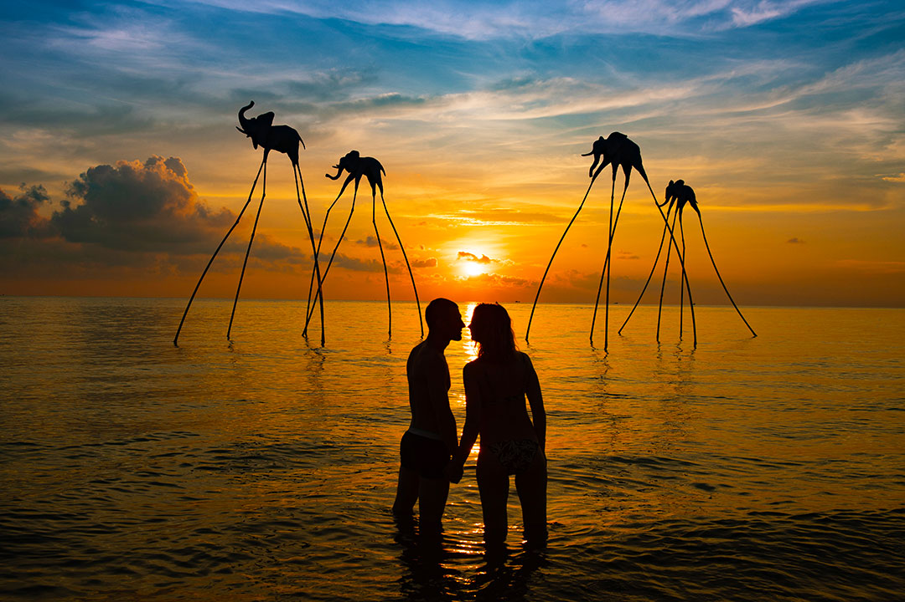

Lựa chọn điểm đến

Top 10 hòn đảo đẹp ở Nha Trang – Có “Lực Hấp Dẫn” nhất
Quỳnh Phủ hội quán Ninh Hòa – Duyên dáng với lối kiến trúc của người Trung Hoa
Nhà thờ đá Nha Trang – Lạc lối “Trời Tây Cổ Kính” giữa thành phố biển
Đảo hòn Mun Nha Trang – Nơi trải nghiệm ngắm san hô đẹp nhất

Top 10 trò chơi trên biển ở Nha Trang – Đáng trải nghiệm thử một lần
Z Beach Nha Trang – Công viên vui chơi đầy góc “Triệu View”
Thủy cung Vinwonders Nha Trang – Khám phá bí ẩn dưới lòng đại dương
Kong Forest Nha Trang – Điểm đến đánh thức bản lĩnh của bạn
Vườn thú Vinwonders Nha Trang – Khám phá “Tiểu Safari Phú Quốc” có gì?
Bãi rêu Nha Trang – Gốc “sống ảo” chỉ xuất hiện một lần trong năm
Top 14 bãi biển đẹp ở Phú Quốc (Phần 2) – Khiến bạn chỉ muốn “Lạc Trôi” ngay giữa làn nước
Top 14 bãi biển đẹp ở Phú Quốc (Phần 1) – Khiến bạn chỉ muốn “Lạc Trôi” ngay giữa làn nước
Nhà tù Phú Quốc – Nơi cảm nhận kinh hoàng của chiến Tranh
Hòn Gầm Ghì Phú Quốc (Hòn Dăm Ngang) – Mê mệt nơi gọi là thiên đường
Hòn Móng Tay Phú Quốc

Hòn Móng Tay Phú Quốc
Top 14 bãi biển đẹp ở Phú Quốc (Phần 1) – Khiến bạn chỉ muốn “Lạc Trôi” ngay giữa làn nước
Nhà tù Phú Quốc – Nơi cảm nhận kinh hoàng của chiến Tranh
Hòn Gầm Ghì Phú Quốc (Hòn Dăm Ngang) – Mê mệt nơi gọi là thiên đường
Hòn Móng Tay Phú Quốc
Hòn Móng Tay Phú Quốc
Top 5 Quán bánh xèo tôm nhảy Quy Nhơn – Trứ danh, khiến du khách mê mẫn
List 6 món ăn ngon ở Quy Nhơn – Khiến bạn phải thỏa cái “bụng” của mình

10+ Món ăn đặc sản ngon ở Đà Nẵng, khiến du khách phải xuýt xoa
Ăn gì ở Ninh Bình? – 8 món ăn đặc sản khiến bạn phải say mê đến cùng